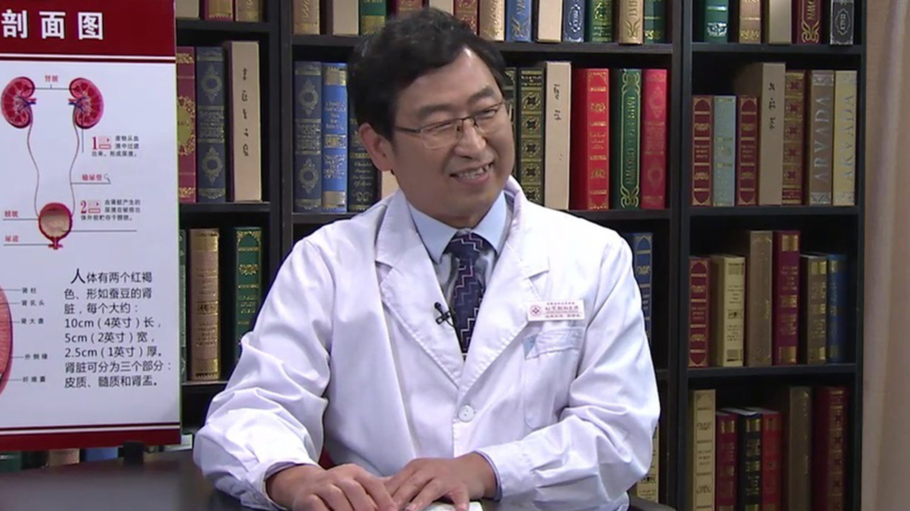

8.25 前列腺癌//韩修武教授¶
韩修武 主任医师¶

首都医科大学附属北京朝阳医院西区泌尿外科主任 主任医师 医学博士。
中国医师协会泌尿外科医师分会会员，北京市药监局医疗器械评审专家委员会会员，北京市医疗事故鉴定专家组成员，《中华临床医师杂志》审稿专家，UpToDate临床顾问中文版翻译专家。
主要成就： 获医学发明专利2项；获北京市科技成果一等奖一项；发表学术论文50余篇，包括SCI论文4篇；参加编写泌尿外科专业书籍4部，主译英文书籍1部。
专业特长： 擅长肾移植手术和处理肾移植术后各种疑难并发症及肾移植术后肿瘤的诊断和治疗。